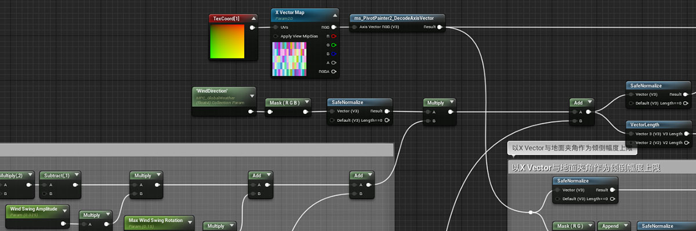

Technical Art
During my bachelor studies, I learnt about computer graphics and could implement materials or shaders in Unity or Unreal Engine to achieve some rendering effects.
Grass shader
I made the grass shader in UE4 that can interact with the player, the NPCs and the objects. I also made the rain effects (particle system and screen post-processing) in this demo. Click here to download the demo.
Here is the demonstration video.
Demonstration video
Toon shading
I implemented a cel shading effect that imitates The Legend of Zelda: Breath of the Wild / Tears of the Kingdom, by modifying Unreal Engine's source code to create a custom shading model. It can be affected by all the light sources and global illumination.
Here is the demonstration video.
Demonstration video
※ The model assets in this video are downloaded from the Internet and only used for learning and exercise.